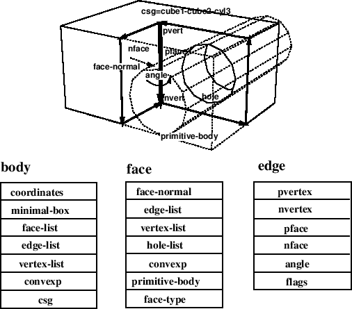

A single plane of
image data is represented by pixel-image object.
pixel-image is a two-dimensional array of bytes.
The interpretation of each byte is application dependent.
Although it is most commonly used to represent brightness of a pixel,
it may be used to represent edge intensity, gradient direction,
color component intensity, bar graph, or whatever.
pixel-image [class]
:super array
:slots xpicture display-lut histogram
brightness-distribution0
brightness-distribution1
brightness-covariance
-
- Pixel-image is the two dimensional array with displaying facility
in xwindows. The pixel conversion is performed by display-lut and
the resulted image is stored in xpicture.
Major axis is taken vertically. The pixel of img at (x, y)
should be accessed by (aref img y x).
:width [method]
-
- returns the horizontal size of a pixel-image,
which is the second dimension.
:height [method]
-
- returns the vertical size of a pixel-image.
:size [method]
-
- is equivalent to array-total-size.
:transpose &optional (result (instance (class self) :init dim0 dim1)) [method]
-
-
exchanges x and y coordinates.
:map-picture lut &optional (result (send self :duplicate)) [method]
-
-
This pixel-image is translated by the lut and stored in result.
:map fn &optional (result (send self :duplicate)) [method]
-
-
applies function fn to all the pixels in the image,
and put the result in the result pixel-image.
:brightest-pixel [method]
-
- finds the brightest pixel value in this image.
:darkest-pixel [method]
-
- finds the darkest pixel value in this image.
:average-pixel [method]
-
- calculates the average intensity of all
the pixels in this image.
:halve &optional simage [method]
-
-
returns pixel-image that is shrunk into half-size image.
:subimage x y subwidth subheight [method]
-
-
cuts out a subwidth x subheight rectangular region
with its top-left corner at (x,y) of this image.
The origin of the image is taken at the top-left corner.
:Subimage returns a new pixel-image object.
:xpicture &optional lut [method]
-
-
translates this image using the look-up table lut
and sets translated pixel-image object to xpicture.
:display-lut &optional newlut [method]
-
-
sets look-up table newlut as display-lut.Then
translates this image using this look-up table
and sets translated pixel-image object as xpicture.
:display (xwin geometry:*viewsurface*) [method]
-
-
displays this pixel-image in the xwin xwindow by using :putimage.
Each pixel value is referred as a index in x's color map.
To get a desired appearance, this pixel-image must have been translated
by proper LUTs.
:duplicate [method]
-
- makes an instance of the same class
as this image object with the same width and height.
The pixel data are not copied.
:copy-from src [method]
-
- copies pixel data from another
image object specified by src. src must be of the
same dimension as this image.
:hex &optional (x 0) (y 0) (w 16) (h 16) (strm t) [method]
-
-
prints pixel data in the specified rectangular region
in the hexadecimal format.
:hex1 &optional (x 0) (y 0) (w 64) (h 16) (strm t) [method]
-
-
prints pixel data in the specified rectangular region
in the hexadecimal format.
:grin1 strm &rest msg [method]
-
-
prints this image-pixel object with its name and dimensions.
:init w h &optional imgvec [method]
-
-
initializes a pixel-image object to have w width and h height.
:amplify rate &optional (result (send self :duplicate) [method]
-
-
multiplies rate to each pixel value.
:compress-gray-scale levels &optional result &aux pict2 [method]
-
-
translates this image into range of 0..levels
and returns translated pixel-image object.
:lut lut1 &optional (result (send self :duplicate)) [method]
-
-
translates this image using the look-up table lut1
and returns translated pixel-image object.
:lut2 lut1 lut2 &optional (result (send self :duplicate)) [method]
-
-
translates this image using a look-up table that concatenated lut1
and lut1. And returns translated pixel-image object.
:histogram [method]
-
-
counts the occurrence of each pixel value in this image and returns
an integer-vector representing the histogram.
:brightness-distribution [method]
-
-
returns brightness-distribution.
:optimum-threshold [method]
-
-
returns levels that is maximum of this image's brightness-distribution.
:project-x [method]
-
- adds all pixel values of the same x coordinate
and returns a vector of these values.
:project-y [method]
-
- adds all pixel values of the same y coordinate
and returns a vector of these values.
:digitize threshold &optional (val0 0) (val1 255) result [method]
-
-
translates this image into 2 levels image val0 and val1
using threshold.
:and img2 [method]
-
-
bit-and operates between this image and img2,
and returns operated pixel-image.
:plot min max &optional color viewsurface [method]
-
-
plots pixels having values between min and max inclusively
with color (gc) on viewsurface.

-
- detects edge of this image. And displays this edge on this image.
2016-03-23